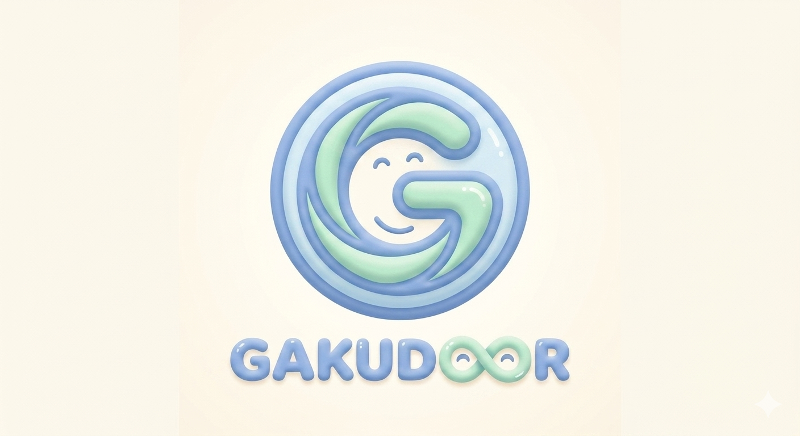

欠席・遅刻連絡
保護者がスマホから数タップで送信。電話を取らずとも一覧で把握できます。

Gakudoor ガクドア｜学童運営支援システムBrochure ／ ご案内
Gakudoor（ガクドア）は、電話・紙・口頭連絡に頼りがちな学童運営を、 保護者・施設・自治体がつながる安心の仕組みに変える学童運営支援システムです。
01 ／ 現場のお悩み
8〜9時に集中。受けながら別の電話を取り損ね、現場の動きが止まりがちに。
「今日は祖父が迎え」「習い事へ直行」など、口頭中心の引継ぎでは漏れが出やすい。
紙にチェック → 事務処理 → 転記、と二重三重の手作業になりがち。
出席日数・延長時間・キャンセルの集計に、毎月数日を要してしまう。
「いつもの先生」しか経緯を知らず、休みや異動の引継ぎで負担がかかる。
その負担、Gakudoor で減らせます。
02 ／ 解決策
保護者がスマホから数タップで送信。電話を取らずとも一覧で把握できます。
誰が・何時に・どの方法で迎えに来るかをスタッフ全員で共有。乗車済みもタップで記録。
QRをかざすだけで受付。カード忘れには手入力フォールバックも標準で用意しています。
お知らせ・献立・写真を一斉通知。LINE連携・既読確認・画像添付に対応します。
出席日数・延長時間などをワンクリックで集計。CSV／PDFで切り口を選んで出力できます。
電話／面談／メール等のやり取りを履歴で記録。誰でも経緯を確認でき、属人化を解消します。
きょうだい児童の関連付け、続柄ごとの保護者複数登録に対応。家族単位で運用できます。
アレルギー有無・緊急連絡先・特記事項を一画面で。検索の絞り込みにも使えます。
ロール別の閲覧／編集制御。出勤QR・シフト・給与までまとめて運用できます。
※ ご利用施設の運用に合わせて、機能の表示・非表示や項目の調整が可能です。お困りごとに合わせて、必要な機能から段階的にご導入いただけます。
03 ／ アプリ画面
01 ／ Staff QR
マイページのQRをかざして打刻。紙のタイムカードを廃止できます。
02 ／ Attendance
拠点別に出席・送迎要否・乗車済みをひと目で。タップで状態を更新。
03 ／ QR Scan
カメラ＋手入力に対応。受付時に音声で名前を読み上げ。
04 ／ Children
学年・在籍・アレルギーで絞り込み。並び替えにも対応。
05 ／ TEL Note
対応履歴を電話／面談／メール別に保存。きょうだいへ1タップで往復。
06 ／ Chat
スレッド管理・未読数・既読状況。児童ごとの履歴も確認できます。
※ 表示中の名前・施設名・QRコード・メッセージはすべてダミーです。実際の運用データではありません。
04 ／ さらにできること
For Office
対象月の出席・延長・欠席をまとめて確定。請求やシフト計算の元データを安定させます。
月次・施設別・児童別など切り口を選んで出力。請求や行政提出にもそのまま使えます。
管理者・主任・現場スタッフごとに「閲覧のみ／編集可」を細かく設定できます。
献立や行事のお知らせを画像付きで配信。スマホでも崩れずに読めます。
For Field Staff
マイページのQRをかざすだけで打刻。紙のタイムカードを廃止できます。
月ごとのシフトを画面上で作成・編集。スタッフは自分の予定を確認できます。
打刻ログ・修正履歴を残し、後追いの確認もしやすい形で保管します。
時給・通勤手当・源泉徴収のCSV取り込みに対応。月末作業を圧縮します。
For Families
専用アプリ不要。LINEから通知を受け取り、お迎え変更や欠席連絡もスマホ完結。
きょうだいの紐付け・続柄を保ったまま、保護者を複数登録できます。
保護者・児童のプロフィールやアイコン画像を保護者自身で更新できます。
「この日だけ来る」「連休はお休み」など、日別の利用予定をまとめて登録。
For Children
受付QRをかざすだけ。文字入力に頼らず、低学年でも自分で受付できます。
受付時に名前を音声で読み上げ。視認性が落ちる時間帯でも安心です。
受付後に小さななぞなぞを表示。義務的な打刻を、ささやかなワクワクへ。
片手で操作できるよう、ボタンや余白を大きく・指で押しやすく設計しています。
05 ／ Gakudoorのこだわり
保護者・施設・自治体をつなぐ、
現場にやさしい仕組みづくり。
Gakudoor は、電話・紙・口頭連絡に頼りがちな学童運営を、 スマホでつながる安心の仕組みに変えるために設計された運営支援システムです。 IT の専門知識がなくても、紙と電話に慣れた支援員・保護者・お子さままで、誰もが迷わず操作できることを最優先にしています。
電話ラッシュ・紙の出席簿・お迎え変更の共有漏れ。学童で実際に起きている業務を起点に設計しています。
大きなタップ領域・最小限の選択肢・音声案内など、スマホ操作に不慣れな方でも使える設計です。
欠席連絡だけ・出欠管理だけといった部分導入から開始可能。施設の体制に合わせて拡張していけます。
下記の導入実績団体での実運用フィードバックを継続的に反映。日々の業務に合う形へ改善を重ねています。
NPO法人 Playful Learning Design Lab.（PLDL）様
Gakudoorは PLDL 様に採用いただき、実際の学童運営の現場で活用されています。 現場での運用を通じて、保護者連絡・出欠確認・お迎え管理など、日々の業務に合う形で改善を重ねています。
06 ／ 期待できる変化
| これまで | これから | |
|---|---|---|
| 電話対応中心 | → | スマホ受付へ |
| 紙管理 | → | デジタル管理へ |
| 共有漏れ | → | リアルタイム共有へ |
| 集計手作業 | → | CSV補助へ |
※ 運用方法・施設規模・既存業務との組み合わせにより効果は異なります。
07 ／ 他社との比較
| 項目 | Gakudoor | 一般的なITサービス |
|---|---|---|
| 開発・提供 | 株式会社Rezon が開発・提供 | 大手IT企業・営業会社 |
| 現場知見 | 採用団体（NPO法人 PLDL）の運用実績を継続反映 | 一般的なヒアリングベース |
| 相談相手 | 開発元と直接相談できる | 営業窓口経由・担当者交代あり |
| QRカード忘れ対応 | 手入力フォールバック標準搭載 | スキャン不可のままになりがち |
| 受付の体験 | 音声案内・なぞなぞ表示で子どもにやさしく | 事務的な打刻のみ |
| きょうだい管理 | きょうだい紐付け・1タップで往復 | 別々の児童として個別管理 |
| 保護者通知 | LINE連携・既読確認・画像添付対応 | メール通知中心・確認状況不明 |
| 送迎対応 | 送迎要否・乗車済みを画面で共有 | 紙やホワイトボードで管理 |
| TEL票・履歴 | 電話／面談／メールを履歴で保存 | 個人ノート任せで属人化 |
| 出力 | CSV／PDF を月次・施設別に出力 | CSVのみ・固定フォーマット |
| スタッフ運用 | 出勤QR・シフト・給与まで一体運用 | 別システムを併用しがち |
| 権限管理 | ロール別の閲覧／編集を細かく制御 | 管理者・一般の2段階のみ |
| 改善方針 | 採用団体の運用フィードバックを継続的に反映 | 機能要望はチケット待ち |
| スタンス | 相談型・押し売りなし | 商談クロージング型 |
※ 比較対象は一般的に学童・教育施設で見かけるITサービスの傾向をまとめたものです。個別の他社サービスを指すものではありません。
08 ／ 料金
小規模・1施設向け
9,800 円／月〜（税抜）
中規模・標準的な学童向け
29,800 円／月〜（税抜）
法人運営・複数拠点向け
49,800 円／月〜（税抜）
先着5施設限定
初期費用 0円 ＋ 導入サポート無料。
ご相談から導入まで、株式会社Rezon が現場の言葉で伴走いたします。
※ 表示価格は税抜きです。施設規模・要件により最適なプランをご提案します。お気軽にご相談ください。
09 ／ 導入の流れ
本パンフレットや関連資料をお送りします。気になる点はそのままお返事ください。
所要 数分
メール／LINE
画面をお見せしながら、現場の流れに合うかを一緒に確認します。録画提供も可能です。
所要 15分
オンライン可
期間と機能を絞ってお試しいただけます。運用イメージを実機で確認できます。
期間 ご相談
無料
導入後は、現場の声をもとに改善を続けます。お困りごとは株式会社Rezon へ直接ご相談ください。
本格運用
継続改善
※ 各ステップの内容・期間は、施設のご状況に合わせて柔軟にご相談いたします。
10 ／ ご相談はこちらから
15分でご紹介します。画面を見ながら、現場の流れに合うかをご一緒に確認します。
ちょっとしたご質問や、料金・運用のご相談もお気軽にどうぞ。
本パンフレットや、機能ごとの詳細資料をお送りいたします。
Gakudoor は、現場の小さな手間を仕組みでやさしく減らし、
先生方が子どもたちと過ごす時間を取り戻すための仕組みづくりを続けます。